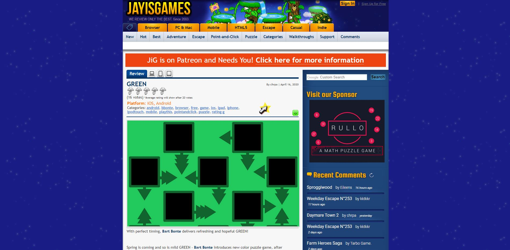
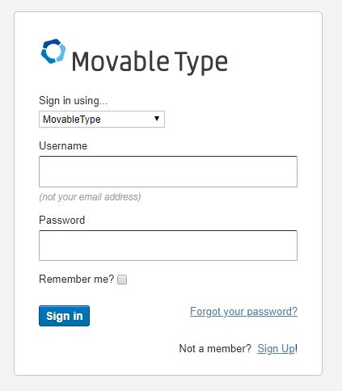

Analysis of JayIsGames
JayIsGames is a review site for games, primarily small-scale flash and browser games. At first glance, one can see that it holds a certain air of nostalgia for those who may have grown up with online flash games. One might describe their website as dated, but is their usability as behind-the-times as their appearance might suggest?
I will evaluate the user-friendliness of the site based on the following criteria: Hierarchy - How clear is the sense of direction? Logic - How logical are the design choices in terms of navigation? Naming - How effectively do words help with navigation? Iconography - How effectively do visual indicators help with navigation?
Hierarchy
Upon clicking through and exploring the site as a whole, we can see that it is heavily anchored to the home page no matter where you are in the domain. There are not enough layers in the site to necessitate breadcrumb navigation.
However, when navigating the grey menu, there are some inconsistencies in the URLs. Clicking each button brings me to different paths that don't follow a clear hierarchical convention. One button takes me to "jayisgames.com/games/category/adventure", while another takes me to "jayisgames.com/tag/puzzle". While the URL isn't always the first thing people notice, it is a slight detail that I think detracts from professionalism.
I would suggest a restructuring of their filepaths, after rethinking their categorization scheme.
Logic
The overall layout of the site is logical, with their logo highly visible at the top left and only the necessary utility of sign in/up in the header. We then see various useful widgets on the right sidebar, and more utilities at the footer showing the same items as in the yellow menu, notable games, description, and legal information.
The main issue that I can see is that registering, logging in, and searching all make use of highly noticeable third-party apps.
These distract from the consistency and disrupt the anchor of their brand image. I would suggest trying a proprietary option.
Naming
The language used throughout the site is understandable and it is clear that the yellow buttons indicate different game categories. Their tagline also helps a lot in communicating their mission and history. While those who frequent the site may be unfazed by the grey buttons, newcomers may be confused about why game genres are mixed with tags like "New", "Categories", and "Comments". The fact that the website defaults to showing the two menus together may add cognitive burden in knowing where to start.
My suggestion is to re-design the menus so that categories are in one menu only, with a separate menu for features of the site.
Iconography
JayIsGames has a decent sense of what visual indicators are necessary for navigation. The nav-bar highlights the page you're on, with appropriate hover effects and animations for various icons throughout the site.
Notably the "tag" icon toggles the grey menu, indicating they are tags unlike the yellow buttons above. The main issue I noticed was the device icons.
My immediate thought was that they change the resolution of the site, but they actually lead to "browser", "mobile", and "tablet" game categories. Even stranger, they also have nothing to do with the review despite their placement.
I would do away with these icons altogther, as they can be easily confused with resolution icons.
Conclusion
It is clear that JayIsGames has strong community features and a large library of game reviews that is highly informative for their target audience. The site is greatly usable and logical for the most part. My main suggestions revolve around categorization of the game genres, along with the site features. If the site could draw a clear line between tags used to categorize their library of games, and the community features of the site itself, I think it would be a huge improvement.